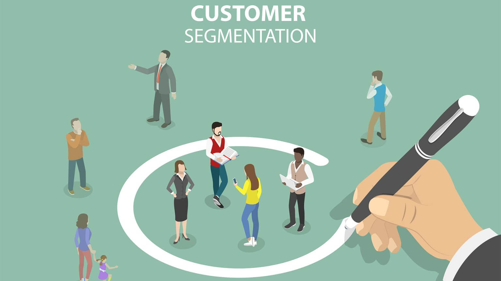
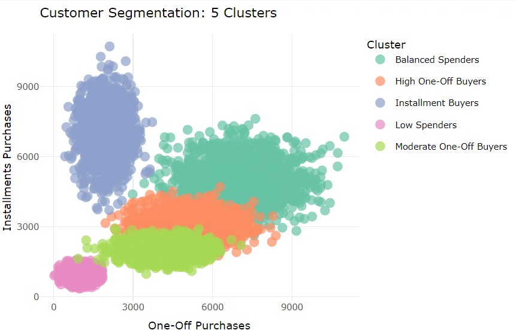
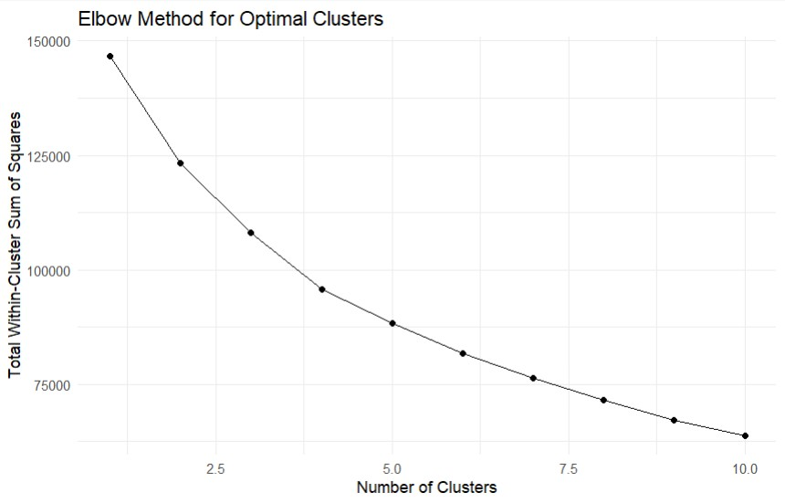

Retail Customer Segmentation Analysis
August 2024 – February 2025

Project Overview
Developed an advanced customer segmentation model using K-means clustering to identify distinct customer groups based on purchasing behavior and income patterns. The project enabled targeted marketing strategies and optimized resource allocation by providing deep insights into customer segments through interactive visualizations and comprehensive data analysis.
5 Customer Segments
Identified distinct customer groups
Targeted Marketing
Improved campaign effectiveness
Resource Optimization
Enhanced allocation efficiency
Project Workflow & Methodology
Data Collection & Understanding
Gathered comprehensive retail customer data including credit card usage patterns, purchase history, and demographic information. Analyzed dataset structure and identified key features for segmentation analysis.
Data Preprocessing & Cleaning
Performed extensive data cleaning including handling missing values, outlier detection, and feature selection. Implemented data standardization using Z-score normalization to prepare features for clustering algorithms.
Optimal Cluster Determination
Applied the Elbow Method to identify the optimal number of clusters for K-means algorithm. Analyzed within-cluster sum of squares to determine the point of diminishing returns for cluster count.
K-means Clustering Implementation
Implemented K-means clustering algorithm with optimal cluster count. The algorithm grouped customers based on their purchasing patterns, income levels, and spending behavior characteristics.
Cluster Analysis & Interpretation
Analyzed resulting clusters to understand customer segment characteristics. Identified distinct groups such as high-value customers, budget-conscious shoppers, and installment buyers.
Visualization & Dashboard Creation
Developed interactive visualizations and dashboards to present segmentation insights. Created plots showing customer distribution across different purchasing dimensions and segments.
Technical Implementation
Clustering Algorithm
Implemented K-means clustering, an unsupervised machine learning algorithm that partitions customers into distinct groups based on similarity in their purchasing behavior and demographic characteristics.
Optimal Cluster Selection
Utilized the Elbow Method to determine the optimal number of clusters by analyzing the within-cluster sum of squares (WSS) against different cluster counts, identifying the point where additional clusters provide diminishing returns.
Data Standardization
Applied feature scaling using Z-score normalization to ensure all variables contributed equally to the distance calculations in the clustering algorithm, preventing features with larger scales from dominating the results.
Visualization Techniques
Employed advanced data visualization techniques including scatter plots, cluster plots, and interactive dashboards to effectively communicate segmentation results and customer insights.
Results & Business Impact

Customer segments visualization based on purchasing behavior

Customer segments visualization based on Elbow Plot
Identified Customer Segments
- High One-Off Buyers: Customers who prefer large, one-time purchases
- Installment Buyers: Customers who frequently use installment payment options
- Moderate Spenders: Balanced customers with moderate purchasing across categories
- Low Spenders: Budget-conscious customers with minimal purchasing activity
- Premium Customers: High-value customers with significant purchasing power
Business Outcomes
- Enabled personalized marketing campaigns for each segment
- Optimized resource allocation based on customer value
- Improved customer retention through targeted strategies
- Enhanced product recommendations and promotions
My Contribution
In this customer segmentation project, I played a pivotal role in transforming raw customer data into actionable business insights through comprehensive data analysis and advanced visualization techniques.
Data Cleaning & Preprocessing
Implemented robust data cleaning pipelines to handle missing values, remove outliers, and ensure data consistency. Performed feature selection and data standardization using Z-score normalization to prepare the dataset for machine learning algorithms.
Data Modeling & Analysis
Developed and implemented the K-means clustering model to segment customers based on their purchasing behavior and demographic characteristics. Applied the Elbow Method to determine the optimal number of clusters, ensuring meaningful and actionable customer segments.
Data Visualization & Insights
Created comprehensive visualizations including Elbow Method plots and interactive cluster visualizations using ggplot2 and plotly. Designed dashboards that effectively communicated segmentation results and enabled stakeholders to understand customer patterns and make data-driven decisions.
Challenges & Solutions
Data Quality Issues
The initial dataset contained missing values, inconsistencies, and outliers that could skew clustering results and lead to inaccurate segment definitions.
Solution: Implemented comprehensive data cleaning procedures including imputation strategies for missing values, outlier detection algorithms, and data validation checks to ensure high-quality input for the clustering model.
Determining Optimal Clusters
Selecting the appropriate number of clusters was challenging as too few clusters would oversimplify customer groups while too many would make segments less actionable.
Solution: Applied the Elbow Method with multiple validation techniques to identify the optimal cluster count that balanced model complexity with business interpretability and actionable insights.
Feature Selection & Standardization
Different features had varying scales and units, which could disproportionately influence the clustering results if not properly handled.
Solution: Implemented Z-score standardization to normalize all features, ensuring equal contribution to distance calculations and preventing features with larger numerical ranges from dominating the clustering process.
Business Applications
Targeted Marketing
Enabled creation of personalized marketing campaigns for each customer segment, improving campaign effectiveness and ROI through tailored messaging and offers.
Customer Retention
Identified high-value customer segments for focused retention efforts and developed specific strategies for at-risk customer groups to reduce churn.
Product Development
Provided insights into customer preferences and purchasing patterns, guiding product development and inventory management decisions.
Resource Optimization
Enabled efficient allocation of marketing resources and sales efforts based on customer segment value and potential, maximizing return on investment.